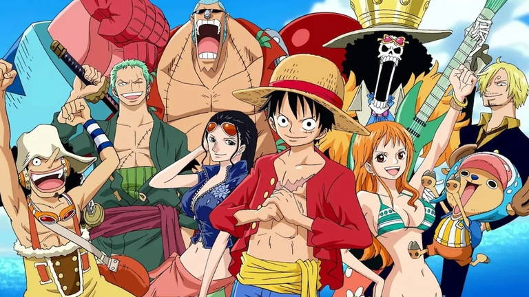

One Piece es una serie ideal para quienes buscan una historia épica llena de acción, humor y emoción. Su trama cautivadora combina giros inesperados, temas profundos como la amistad y la libertad, y un mundo único repleto de islas fascinantes y misterios. Los personajes son entrañables y evolucionan a lo largo de los episodios, ofreciendo una conexión emocional que se mantiene viva incluso después de más de 1,000 capítulos. Además, su equilibrio entre comedia y batallas épicas, junto con su legado como uno de los animes más influyentes, hace que sea una experiencia inolvidable para cualquier fanático del género.
Una de las cualidades de One Piece es su vasto cast de personajes y el rol que tienen dentro de la tripulación, muchos de estos personajes no los conocemos hasta muy adelante en la historia, por lo que se enseñara a continuación algunas de las caracteristicas de estos personajes:
| Nombre | Personalidad | Primera aparición | Foto |
|---|---|---|---|
| Monkey D. Luffy | Alegre, impulsivo y con un fuerte sentido de la justicia y la libertad. | Capitulo 1 |
|